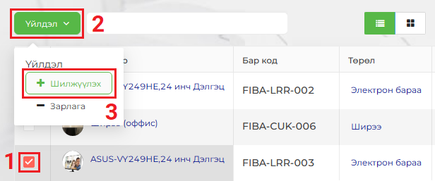
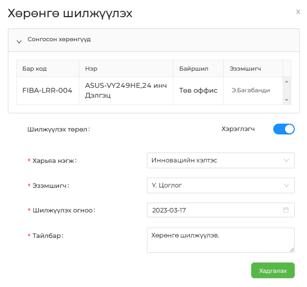
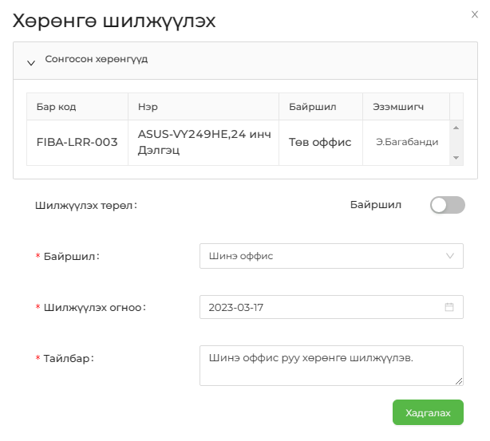

Хөрөнгийг 2 төрлөөр (Хэрэглэгч, байршил) шилжүүлэх боломжтой бөгөөд уг үйлдлийг хийхдээ Хөрөнгийн жагсаалт цонхны Үйлдэл цэсийг идэвхжүүлэх шаардлагатай. Үүний тулд эхлээд жагсаалтаас шилжүүлэх хөрөнгөө сонгож (хөрөнгийн нэрний өмнөх чагтлах нүдийг сонгоно), жагсаалтын зүүн дээд буланд байрлах Үйлдэл товчин дээр дарж, гарч ирэх сонголтоос Шилжүүлэх үйлдлийг сонгоно.


Хөрөнгө шилжүүлэх төрлийг солихдоо энэ товчин дээр дарна.
